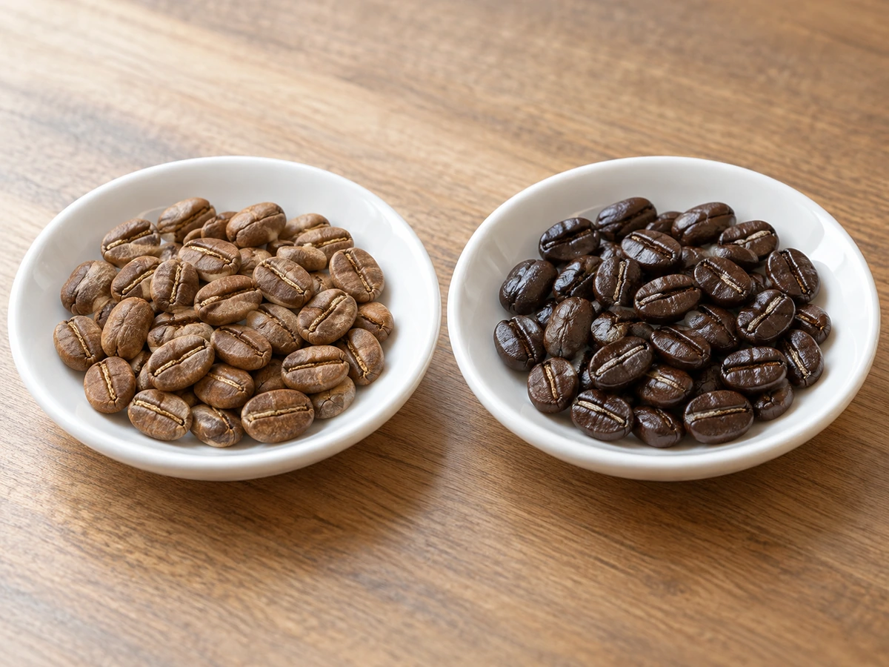

CONCEPT
軽め？ 深め？
その答えを、一緒に探す店
焙煎工房 麻布珈琲は、秋田市茨島にある自家焙煎の珈琲豆の専門店です。 珈琲豆を自分たちで焼いて、販売しています。
Colombia Cleopatra
コロンビアの豆「クレオパトラ」。麻布珈琲では、この豆を軽めと深煎りの両方に焼き分けています。同じ豆でも、焼き方で味が変わります。
焼き上げたクレオパトラについて、お店のInstagramにはこう書かれていました。
酸味、苦み苦手。バランスと香り重視のお客様へオススメです 公式Instagram（2026年10月）より
別の日の投稿には、焼き菓子の写真と一緒に「珈琲は軽め？深め？」とひとこと。 好みを聞いて、合う一杯を一緒に探すお店です。
